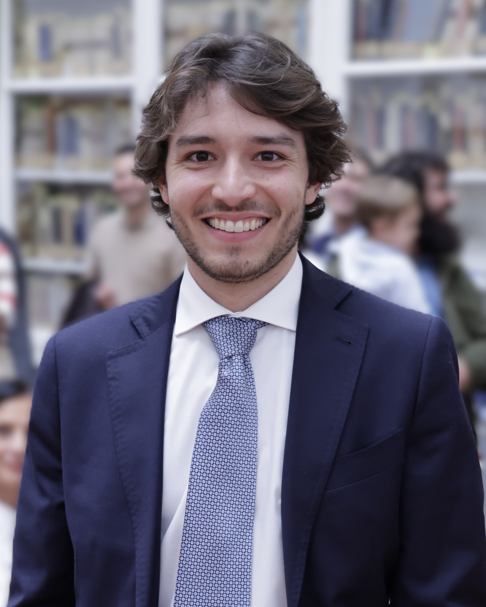

Profile
Profilo

Civil Engineer with a Master’s Degree in Civil Structural Engineering. Passionate about structural optimization and adaptivity as key drivers for the next generation of sustainable buildings. Skilled in structural analysis, numerical modeling, and advanced simulation using FEM, BIM platforms, and programming languages (MATLAB, Python, C#). Strongly motivated to bridge technological innovation, architectural beauty and sustainability in the construction industry.
Ingegnere civile con Laurea Magistrale in Ingegneria Civile curriculum Strutture. Appassionato di ottimizzazione strutturale e strutture adattive come elementi chiave per le costruzioni sostenibili del futuro. Esperto in analisi strutturale, modellazione numerica e simulazione avanzata con software FEM, piattaforme BIM e linguaggi di programmazione (MATLAB, Python, C#). Fortemente motivato a coniugare innovazione tecnologica, armonia architettonica e sostenibilità nel settore delle costruzioni.
CV
CV
You can download my full CV:
Puoi scaricare il mio CV completo: